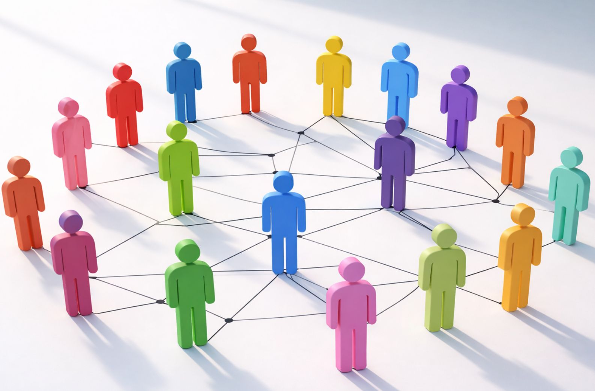

무엇을 할 것인가보다 왜 하는가,
그리고 누구와 함께하는가
기업들은 흔히 더 뛰어난 제품(What)을 만들고
더 효율적인 방식(How)을 찾기 위해 경쟁한다.
그러나 성공하는 혁신 기업의 시작점은 언제나 다르다.
그들은 "무엇을 만들 것인가" 이전에
"왜 존재하는가(Why)"를 묻고,
"누구를 위해 그리고 누구와 함께할 것인가(Who)"를 먼저 결정한다.
코닥은 자신을 '더 좋은 필름을 만드는 회사'로 규정했기에
디지털 혁명의 흐름을 놓쳤다.
그러나 만약 '사람들의 소중한 기억을
더 오래, 더 아름답게 보존하는 회사'라고 정의했었다면
새로운 혁신으로 더 크게 성공했을 것이다.
하지만 Why만으로는 충분하지 않다.
그 가치를 현실로 만들어 가는 것은
결국 Who이다.
이 관점은 비즈니스에서도 동일하게 적용된다.
기업의 Who는 단순히 고객을 의미하지 않는다.
성공하는 기업은 모든 사람을 만족시키려 하지 않는다.
자신들의 Why에 공감하는 올바른 Who를 찾고,
그들과 깊은 관계를 구축한다.
결국 강력한 브랜드와 지속 가능한 기업은
제품의 경쟁력보다
'같은 방향을 바라보는 사람들의 연결'에서 탄생한다.

혁신하는 기업이 던져야 할
가장 중요한 질문
그래서 혁신하는 기업이 던져야 할
가장 중요한 질문은 다음과 같다.
혁신은 더 좋은 답을 찾는 과정이 아니라
더 본질적인 질문을 던지는 순간 시작된다.
비즈니스의 진정한 경쟁력은
What과 How가 아니라 Why와 Who에서 탄생한다.